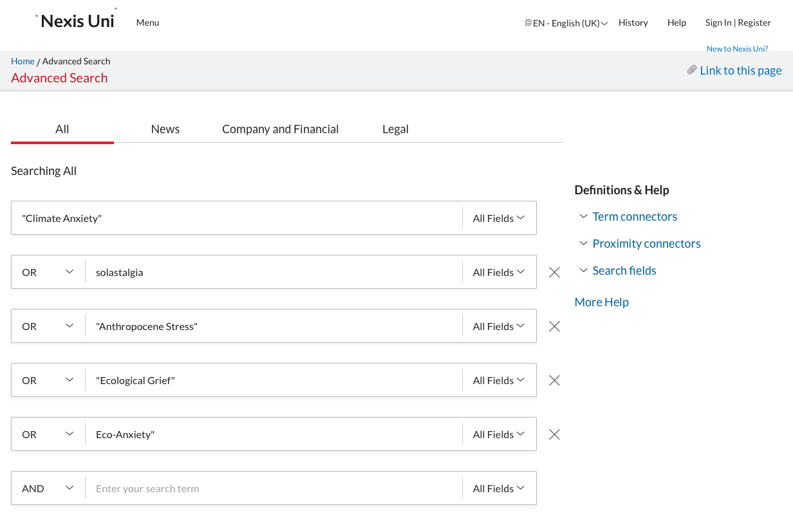
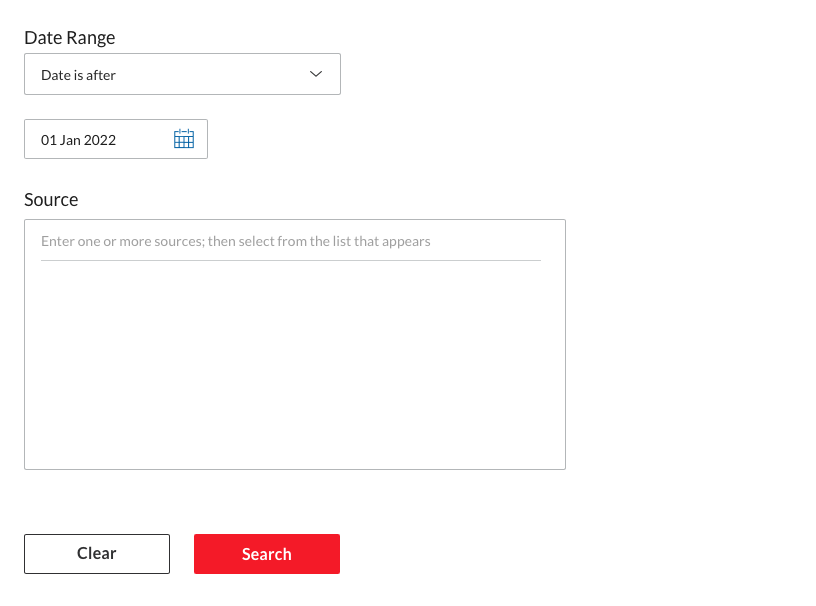
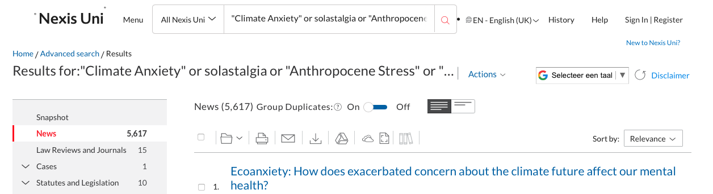
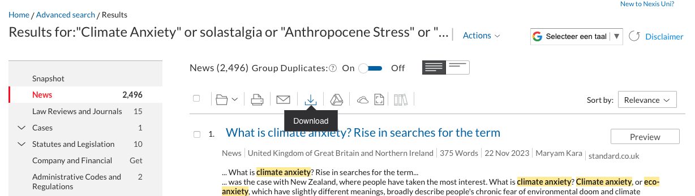
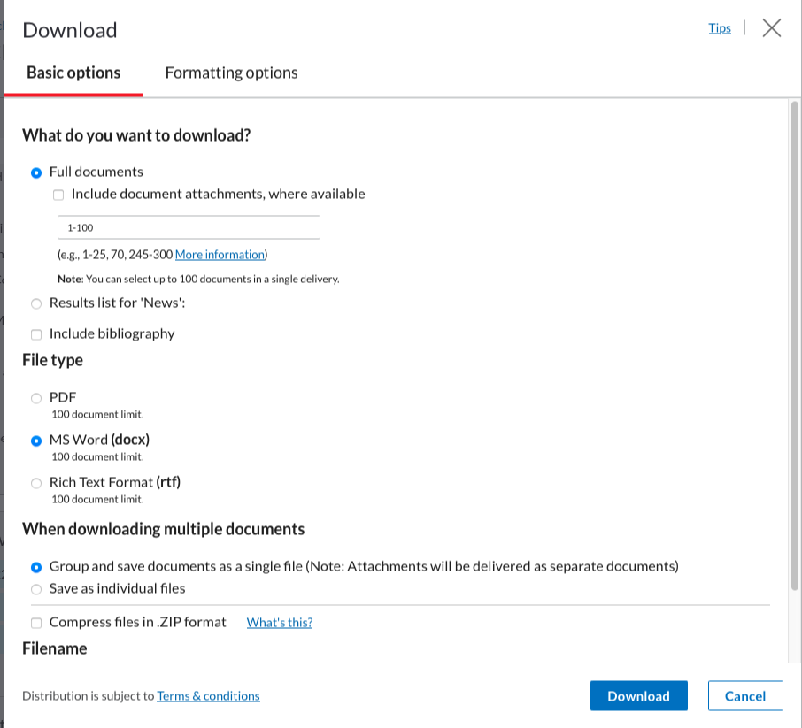
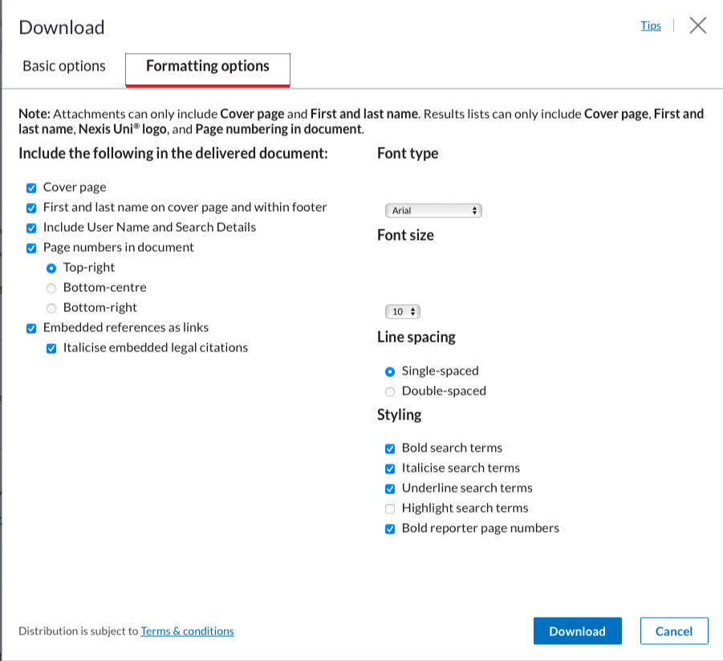

my_files <- list.files(pattern = ".docx", path = "LN", full.names = TRUE, recursive = TRUE, ignore.case = TRUE)Topic Modelling
We will use two data types for this tutorial:
LexisNexis from which we have extracted articles about climate anxiety
Lens.org from which we have extracted patents about water desalination
The aims are:
Learn how to perform topic modelling using R
Learn how to prepare the data for topic modelling
Learn how to adjust text preparation to optimize your results for a given question
Decide on the optimal number of topics in your data
Connect the topics to other variables in your dataset (players, time, inventors,…)
The datasets can be found on blackboard. If, howerver, you prefer working on your own data/topic we will first start with a quick brief on how to export data from LexisNexis and import this data into R.
Exporting and Importing LexisUni data
Export LexisUni data
Even though exporting data from LexisUni is quite straightforward, if we want to export in a format that can be directly read by R and used for textmining, we need to tick the right boxes. We will go through those steps now:
Start with building a query in the advances query section. Make sure you check the AND and OR operators. 
Below the text elements you can adapt the data range if required.

Then click on search to launch the search process. Once the results are shown, make sure to click the switch to remove Group Duplicates (this should be on “On”). At this point adjust any other filter. Be particulary cautious with the language. Many language models are trained for one language so remove any document not in that language if you use a mono-lingual model.
 Once you’re happy with the dataset, go to the “download button”:  A window will appear, this is were you need to be sure to click the same boxes as in the following screenshots. Ensure that the format is Word (docx) and that the documents are grouped into one.

The second screen should look like this: (these should be the basic options):

You can then click on “download”.
Do this as many times are required to download all the articles (100 per 100). Creating an account with your uu email will make this process slightly more streamlined and faster.
Put all the files into one folder. We will then use the LexisNexisTools package to import and format this data to make it directly usable.
First we need to search for all the documents, using the list.files() function we create a list of all the .docx documents in the “LN” folder. Note that the LN folder is created by me to store the files, replace LN with the name of the folder in which you store the files. If the files are stored directly at the root of the current WD, use ““.
At this stage the data is not yet imported, we merely created a list with paths to the files. We will now load those files into R with the lnt_read() function. This will load the data into a specific object with a specific format that we cannot use directly. We therefore transform this object with the lnt_convent() function. We specify “to =”data.frame” so that the result is a dataframe that we can use.
library(LexisNexisTools)
dat <- lnt_read(my_files) #Object of class 'LNT output'
LN_dataframe = lnt_convert(dat, to = "data.frame")We now have the data loaded in R and ready for use. We will perform two extra actions before we continue to ensure that we don’t run into trouble later on. We start with the removal of identical articles (even though the switch is on, there are still some left…) and we remove the articles that are too short for the analysis. We use the nchar() function to count the number of characters in each article and remove those with less than 200 characters.
LN_dataframe = unique(LN_dataframe)
LN_dataframe$length = nchar(LN_dataframe$Article)
LN_dataframe = subset(LN_dataframe, LN_dataframe$length >= 200)The dataset is now ready for use.
# loading our custom functions
library(tm)
library(udpipe)
library(tidyverse)
library(textstem)
clean_text_lemma <- function(text){
#text = removePunctuation(text) # optional
text <- tolower(text) # remove caps
# we can use the gsub funciton to substite specific patterns in the text with something else. Or remove them by replacing them with "".
text <- gsub("\\.", "", text)
text <- gsub("\\;", "", text)
text <- gsub("\\-", "", text)
text <- gsub("\\+", "plus", text)
text <- removeWords(text, my_dico) # Remove the terms from our own dictionary
# here we apply lemmatization instead of stemming:
lemma_dico <- make_lemma_dictionary(text, engine = 'hunspell')
# now we apply the dictionnary to clean the text
text <- lemmatize_strings(text, dictionary = lemma_dico)
text <- removeWords(text, stopwords(kind <- "en")) # remove stopwords (in english)
text <- trimws(text) # remove any weird spaces in the text
text <- gsub(" ", " ", text)
}
c_value = function(words){
# we need to compute the number of higher order terms and the frequency of these terms
# we initiate two empty columns in which we can store this information
words$terms_containing_term <- 0
words$Sum_freq_higher_terms <- 0
# We make sure the data has a dataframe format
words = as.data.frame(words)
# we now loop over all the words to check how often they are nested
for(i in 1:dim(words)[1]){
# first we check in which term the term is nested
# if the term is part of another string it will return TRUE, FALSE otherwise
# The str_detect() function searches for a pattern in a second string and returns
# True if the pattern is part of the string
words$tmp = stringr::str_detect(words$keyword, words[i,1])
# We then only keep the words that contain the word we are searching for
tmp = subset(words, words$keyword != words[i,1] & words$tmp == TRUE)
# The number of strings in which the pattern is nested is then simply the
# dimension of the dataframe we just found
words[i,4] <- dim(tmp)[1]
# the sum of the frequencies is simply the sum of the individual frequencies
words[i,5] <- sum(tmp$freq)
}
# now compute the c-value
# we first adda column that will contain this value
words$C_value = 0
# then we check if there are nested terms or not and apply the formula accordingly
words$C_value = case_when(
words$terms_containing_term == 0 ~ log2(words$ngram) * words$freq,
#keyword | n_gram | freq dataset | terms count terms | sum_freq_high
words$terms_containing_term != 0 ~ (log2(words$ngram) * (words$freq - (1/words$terms_containing_term) * words$Sum_freq_higher_terms))
)
# to make this work with the other functions we remove the "tmp" column...
words = words[,-6]
#... and we reorganise the columns so that we do not have to adjust the other functions
words = words[,c(1,3,2,4,5,6)]
return(words)
}
term_extraction = function(Text_data, max_gram, min_freq){
# we need three elements of importance for the function to run
# the data, the max ngram and the minimum frequency
Text_df = as.data.frame(Text_data[1,])
x <- udpipe_annotate(ud_model, x = as.character(Text_df[1,2]), doc_id = Text_df[1,1])
x <- as.data.frame(x)
stats <- keywords_rake(x = x, term = "lemma", group = "doc_id",
relevant = x$upos %in% c("NOUN", "ADJ"))
stats$key <- factor(stats$keyword, levels = rev(stats$keyword))
x$phrase_tag <- as_phrasemachine(x$upos, type = "upos")
stats <- keywords_phrases(x = x$phrase_tag, term = tolower(x$token),
pattern = "(A|N)*N(P+D*(A|N)*N)*",
is_regex = TRUE, detailed = FALSE)
stats = subset(stats, stats$ngram >= 1 & stats$ngram <= max_gram)
stats = subset(stats, stats$freq >= min_freq)
return(stats)
}
# specify the dictionary
my_dico = c("a method", "patent")
# load the language model
library(udpipe)
ud_model <- udpipe::udpipe_download_model(language = "english")
#save(ud_model, file = "ud_model.rdata")
ud_model <- udpipe::udpipe_load_model(ud_model)Topic modelling on news data
We start by prepping the text as we did in the first tutorial. We use a loop since it is likely that errors occur in this process that will push us to adjust parameters. The use of a loop makes it easier to pause and continue where we left of. Once the code is stabilised you can use the map() function from tidyverse to make this more efficient and run faster. Or even use multi-threading with the foreach package.
Column 11 contains the text, we start by lemmatizing the text.
library(textstem)
LN_dataframe = LN_dataframe[-c(382,431, 464, 1087),]
for(i in 1:dim(LN_dataframe)[1]){
LN_dataframe[i,11] <-clean_text_lemma(LN_dataframe[i,11])
# now er extract the terms
tmp <- term_extraction(LN_dataframe[i,c(1,11)], max_gram = 4, min_freq = 1)
# and compute the c_value
tmp <- c_value(tmp)
# we remove words with low values
tmp <- subset(tmp, tmp$C_value > 0)
# we combine the tokens
tmp$keyword <- apply(as.matrix(tmp$keyword), 1, gsub, pattern = " ", replacement = "_")
# and we put the text back into the document
LN_dataframe[i,11] <- paste(tmp$keyword, collapse = " ")
}
# we save the result in a .rdata file in case we make a mistake later
save(LN_dataframe, file = "LN_dataframe_POS_lemmcleaning.rdata")Now that we have the text prepared, we need to create a document-term matrix for the topic modelling function. The document-term matrix specifies for each document which terms are contained within it. We use the DocumentTermMatrix() function from the tm package. This function has one argument which is a dataframe with the text of the corpus.
library(tm)
# create the document-Term-matrix
dtm <- DocumentTermMatrix(LN_dataframe$Article)Based on this matrix we will now try to define how many topics we need to extract. For this we use the FindTopicsNumber and FindTopicsNumber_plot from the ldatuning package.
The FindTopicsNumber functions takes several arguments. The first is directly the document term matrix. We also need to specify which number of topics we want to try. The seq() function creates a vector which starts at the from arguments, stops at the to argument. The size of the steps is set by the by argument. If we want to check for a number of topics between 2 and 60 with steps of 5 (2, 7, 13, 18, …) we would write seq(from = 2, to = 60, by = 5).
We then specify the metrics we want to compute, we have discussed these in the lecture.
Warning
For an unknown reason, the “Griffiths2004” function does not work on mac OSX. It should work for windows users.
The mc.cores option specifies on how many cores you want the algorithm to run, this depends on your laptop, adjust to suit your needs. The verbose argument defines whether or not you want the algorithm to provide some information on which stage it is working. This will reduce the anxiety of not knowing whether the algo is stuck, still running or finished.
library(ldatuning)
topic_num <- FindTopicsNumber(
dtm,
topics = seq(from = 2, to = 60, by = 5),
metrics = c("CaoJuan2009", "Arun2010", "Deveaud2014"),
mc.cores = 8L,
verbose = TRUE
)
FindTopicsNumber_plot(topic_num)Now that we have an idea of how many topics we need, so let’s extract the topics. We will use the LDA function from the topicmodels package.
library(topicmodels)
library(tidytext)
# perform topic modelling
topics_model <- LDA(dtm, k = 7)
# get the betas
betas <- tidytext::tidy(topics_model, matrix = "beta")
# subset the betas for results
betas2<- subset(betas, betas$topic %in% c(2,3,4,5,7))We now have the topics and the betas for each topic-term couple. We only keep the highest values for each topic:
ap_top_terms <- betas2 %>%
group_by(topic) %>%
slice_max(beta, n = 10) %>%
ungroup() %>%
arrange(topic, -beta)And now we visualise some of the results:
library(ggplot2)
ap_top_terms %>%
mutate(term = reorder_within(term, beta, topic)) %>%
ggplot(aes(beta, term, fill = factor(topic))) +
geom_col(show.legend = FALSE) +
facet_wrap(~ topic, scales = "free") +
scale_y_reordered()Exercice 2
Adjust the parameters of the previous text cleaning functions. Adjust the dictionnary, maybe switch the noun phrases option ((A|N)*N(P+D*(A|N)*N)*) to an equivalent that includes actions.
Exercice 3
Now try the same logic on patent data. Check the results step by step. Adjust the dictionary etc. to suit patent data. What do you look for in the case of patent data, how is this different from news data?